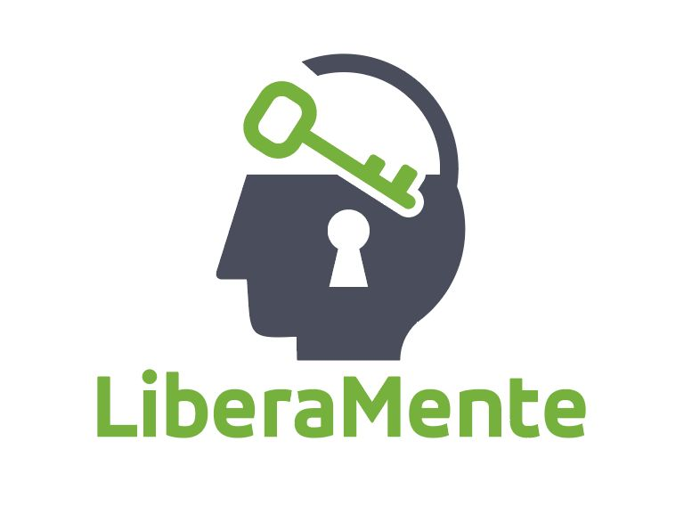

Liberamente APSSiamo un'Associazione di Promozione Sociale dedicata a portare il Metodo Magrin come strumento pratico di consapevolezza e benessere nei contesti in cui c'è più bisogno.
Un cammino nato dalla ricerca personale e trasformato in un impegno condiviso per portare luce e vicinanza laddove regna il dolore.
C'è un momento in cui il silenzio dentro di te diventa assordante. Non succede di colpo. Arriva piano, si insinua nelle sere, nei lunedì mattina, nei momenti in cui dovresti sentirti bene e invece senti solo... un vuoto. Era anche una solitudine più sottile, più crudele: quella di chi non si sente davvero vista da nessuno. Nemmeno da se stessa. È quello che ho vissuto io. Qualche tempo dopo la situazione è peggiorata a causa di un lutto... Quando ho incontrato Andrea Magrin e il suo metodo, qualcosa si è mosso in un posto che non sapevo nemmeno di avere. Non era teoria. Non era un altro corso. Era come se qualcuno avesse finalmente acceso una luce in una stanza che tenevo chiusa da tempo. Da anni cercavo qualcosa nei corsi, nei libri, nelle parole degli altri. Poi un giorno una frase semplice mi ha fermata: "se ti manca qualcosa, prova prima a darla."
Ci ho pensato e ripensato, ho capito che invece di aspettare che qualcuno mi amasse, potevo scegliere io di amare. Per prima. Così, invece di aspettare di ricevere amore, ho deciso di darlo. A chi ne aveva più bisogno di me. A chi era difficile da amare. Ho iniziato a fare volontariato in carcere. Lì ho incontrato uomini che il mondo aveva etichettato come cattivi, pericolosi, irrecuperabili. Eppure, guardandoli negli occhi, ho visto qualcosa che conoscevo bene: il dolore. Perché anche chi ha fatto del male soffre. Anche chi sembra lontano da noi porta dentro ferite profonde. E mentre imparavo a dare amore, accadde una cosa inaspettata: ho scoperto che non avevo bisogno di riceverlo. Quello che avevo dentro stava esplodendo ed era abbastanza per tutti.
Intanto il Metodo Magrin continuava a fare breccia; ho voluto capirlo di più. Viverlo dall'interno. Così ho deciso di intraprendere l'Accademia. Dopo un anno, ho voluto portare il metodo Magrin alle persone che avevo conosciuto in carcere. Dopo tre anni, ho capito che quella esperienza meritava di diventare qualcosa di più grande. Così, nel 2025, è nata l'associazione LiberaMente. Quello che era iniziato come un tentativo di salvarmi si è trasformato in qualcosa che non avrei mai immaginato: un luogo vivo, fatto di persone, storie e trasformazioni reali. Che porta cura nelle carceri, nelle scuole, negli ospedali, ma la cosa più importante non è dove arriviamo. È il perché: perché nessuno dovrebbe restare solo con il proprio dolore. Nemmeno tu.
"Nessuno dovrebbe restare solo con il proprio dolore."— Anna, Fondatrice di LiberaMente APS
Il Metodo Magrin è uno strumento concreto per la gestione delle emozioni e il benessere, a partire dalla persona nei contesti collettivi.
Attraverso la consapevolezza corporea, si impara a portare l'attenzione sulla sensazione fisica associata a un pensiero negativo. Osservandola senza giudizio, la sensazione si trasforma e si dissolve. Il pensiero perde la sua carica emotiva e ritorna neutrro.
La prática regolare apre l'accesso a uno stato di quiete mentale in cui il flusso dei pensieri automatici si interrompe. Ne emerge una maggiore lucidità, capacità di scelta e autocontrollo — risorse preziose in situazioni professionali o personali complesse.
Il Metodo Magrin si adatta alle esigenze dell'ente ospitante, strutturando percorsi su misura che non stravolgono i ritmi quotidiani.
Un primo contatto per presentare il metodo ai referenti, rispondere a domande e valutare il formato più adatto al contesto.
Promozione dell'iniziativa all'interno della struttura, ricordando che l'adesione di utenti o personale è sempre su base volontaria.
Accordo su giorni, orari e spazi adatti per lo svolgimento delle sessioni in armonia con le attività dell'ente.
Riscontro costante e una valutazione condivisa al termine del ciclo per decidere insieme i passi successivi.
Creiamo valore sul territorio attraverso sei direttrici principali, sviluppando progetti su misura per ogni realtà.
Educazione emotiva per prevenire il disagio giovanile. Lavoriamo con studenti e corpo docenti.
Scopri di più →Supporto al personale sanitario (prevenzione burnout) e accompagnamento ai degenti nei reparti critici.
Scopri di più →Sostegno emotivo e percorsi di consapevolezza per detenuti adulti e giovani ospiti degli istituti minorili.
Scopri di più →Welfare aziendale e team building: forniamo strumenti per la gestione dello stress e la coesione dei gruppi di lavoro.
Scopri di più →Interventi a supporto di persone in situazioni di fragilità o transizione, educatori e volontari di comunità.
Scopri di più →Attività motorie, ricreative e di socializzazione volte a promuovere l'inclusione e il benessere psicofisico.
Scopri di più →Unisciti a noi per portare strumenti concreti di consapevolezza e sostegno emotivo laddove c'è più bisogno. Partecipa alle nostre iniziative, collabora alla realizzazione dei progetti e contribuisci attivamente alla diffusione del benessere collettivo.
Per richiedere l'adesione, invia una email indicando le tue motivazioni e i tuoi recapiti. Ti ricontatteremo al più presto per completare l'iscrizione.
Richiedi Iscrizione via Email